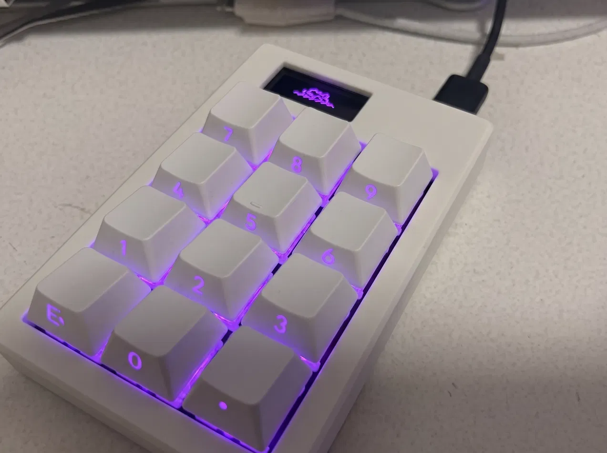
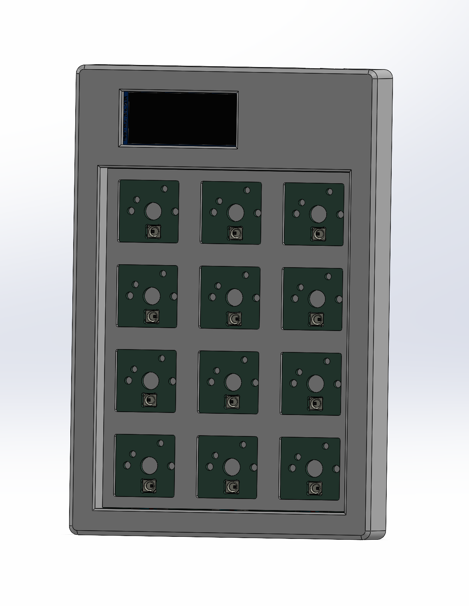
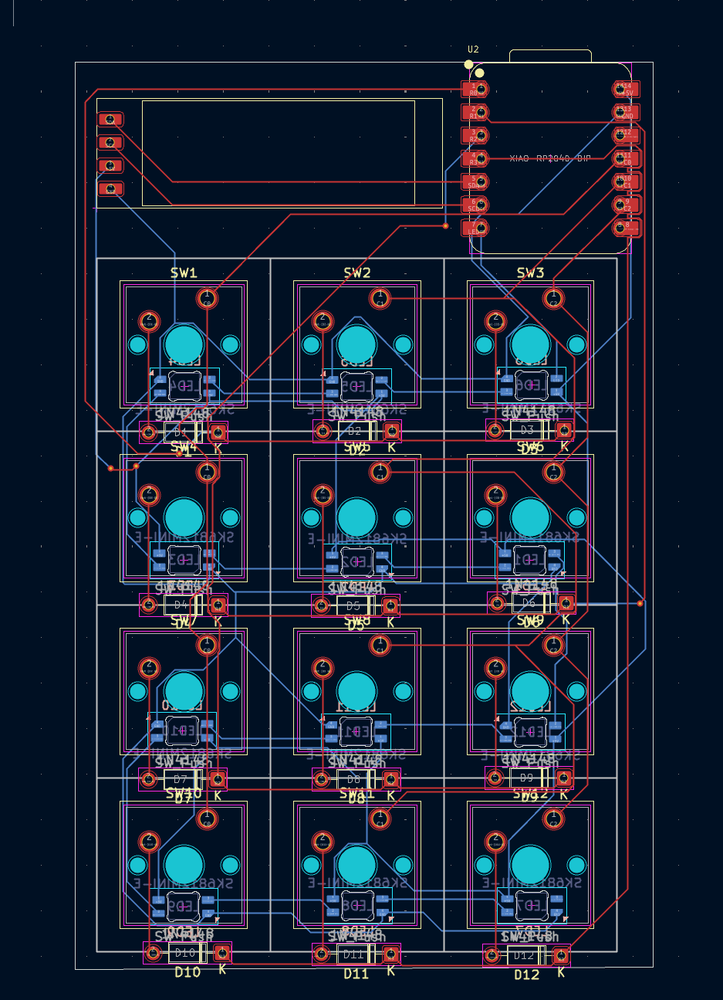
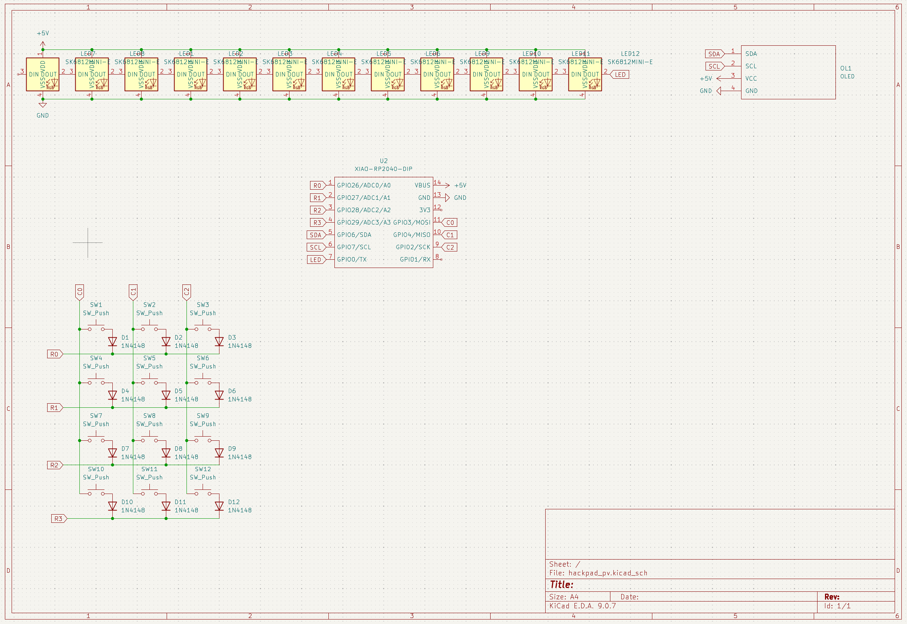
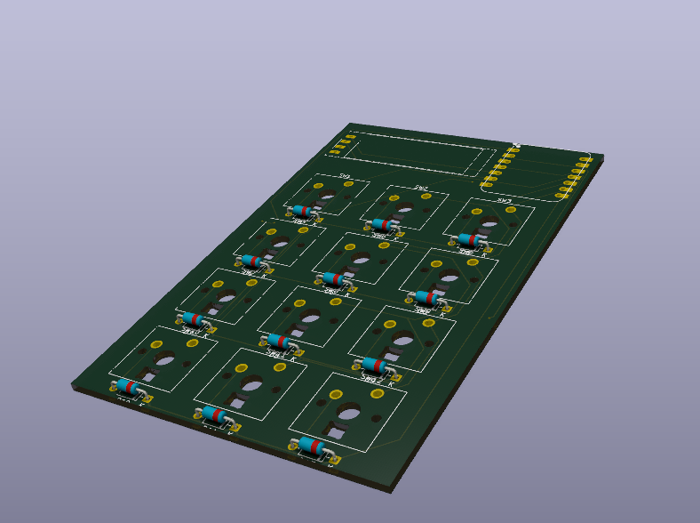

12-Key Macropad
A custom mechanical macropad built to drive the SolidWorks commands that have no keyboard shortcut. Scanned key matrix, per-key addressable RGB, and an OLED, on a microcontroller with eleven usable pins.
Why I built it
I spend most of my time in SolidWorks, and the commands I reach for constantly are the ones with no keyboard shortcut at all. Measure, Section View, Mirror, Linear Pattern, Hole Wizard, Convert Entities, Interference Detection, and the toggles for origins, planes and sketch relations are all buried in a menu or a toolbar hunt. Each one costs a couple of seconds and a break in concentration, and I hit them hundreds of times a day.
A macropad only fixes that if its keys can reach commands the software has no binding for. The way in is F13 through F24. Those keycodes exist in the USB HID spec, but no physical keyboard has shipped them in decades, so nothing in the OS or in SolidWorks claims them. I bind each one inside SolidWorks under Tools, Customize, Keyboard, and the pad sends them.
The rest of the keys go to shortcuts that already exist and are worth having under a thumb anyway: Ctrl+8 for normal to, Ctrl+B for rebuild, Ctrl+Q for force rebuild.
What I did
Scanned twelve keys on a chip that doesn't have twelve free pins. Wiring each switch to its own GPIO is the obvious approach and it does not scale. Twelve switches need twelve pins, and the XIAO RP2040 breaks out eleven. Arranging them as a 3 × 4 matrix drops that to seven, which is what made the rest of the board possible: seven for the matrix, two for the I2C display, one for the LED chain.
Put a diode on every key. A bare matrix lies to you. Hold three keys at once and the scan reports a phantom fourth that nobody pressed, because current finds a path backwards through the pressed switches. A 1N4148 in series with each switch makes that path one way, so the matrix reads correctly no matter how many keys are held.
Chained twelve addressable LEDs off a single pin. SK6812 MINI-E LEDs pass data down the line, so all twelve run from one GPIO. The cost is routing: that data line has to snake across the entire key grid on a two layer board without cutting the ground plane into islands. Keeping the return path continuous under the LED chain was the most constrained part of the layout.
Mapped the keys to keycodes nothing else uses. The pad sends F13 through F24 with modifiers, so every key lands on a SolidWorks command that had no shortcut before, without colliding with anything the OS or the application already owns.
Hand-soldered every part myself. The SK6812 MINI-E LEDs are small SMD packages with pads hidden under the body, and the XIAO RP2040 sits on castellated edge pads instead of through-hole pins, so there's no socket to fall back on if a joint comes out wrong. Twelve LEDs, twelve diodes, and the microcontroller module, all placed and soldered by hand with an iron.
Modelled the enclosure around my own hardware. SolidWorks, with internal standoffs sized to the board and a port cut to the XIAO's USB-C connector. Because I designed both halves, the tolerances were mine to get wrong, so the case had to be dimensioned off the actual board outline rather than a datasheet.
The constraint that shaped the board
Almost every decision here traces back to one number: the XIAO RP2040 gives you eleven GPIO.
That single limit is why the keys are a matrix instead of twelve direct connections, why the display is I2C instead of SPI, and why the LEDs are addressable and chained instead of individually driven. Twelve directly wired switches would have consumed the entire chip and left nothing for the screen or the lighting.
Working backwards from the pin count, instead of picking features and hoping they fit, is what let a 12-key pad with RGB and a display run on a microcontroller the size of a postage stamp.
Result
The board came back from fabrication, got assembled, and it's been on my desk driving my CAD work since. It's the first board I designed that I now use every day.




